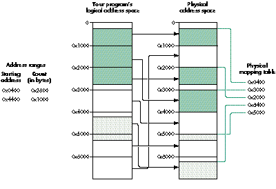
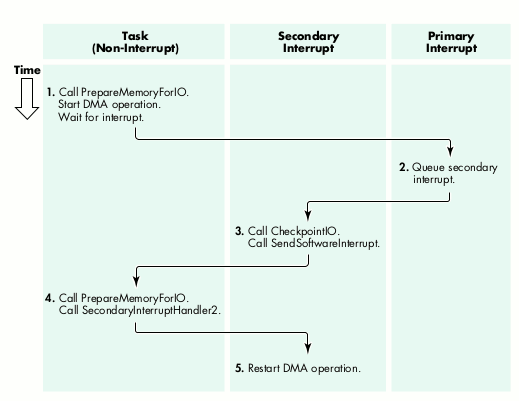
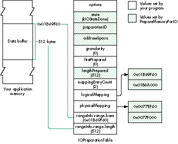
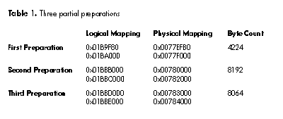

If you're writing a device driver for the new PCI-based Macintosh computers, you
need to understand the relationship of the memory an application sees to the memory
the hardware device sees. The support for these drivers (which will also run under
Copland, the next generation of the Mac OS) includes the PrepareMemoryForIO
function, as discussed in my article in Issue 22. This single coherent facility connects
the application's logical view of memory to the hardware device's physical view.
PrepareMemoryForIO has proven difficult to understand; this article should help
clarify its use.
If you managed to struggle through my article "Creating PCI Device Drivers" indevelop
Issue 22, you probably noticed that it got rather vague toward the end when I tried to
describe how the PrepareMemoryForIO function works. There are a few reasons for
this: the article was getting pretty long and significantly overdue (the excuse), and I
really didn't understand the function that well myself (the reason). Things are a bit
better now, thanks to the enforced boredom of a very long trip, the need to teach this
algorithm to a group of developers, and some related work I'm doing on the SCSI
interface for Copland.
My previous article showed the simple process of preparing a permanent data area
that might be used by a device driver to share microcode or other permanent
information with a device. This article attacks a number of more complex problems
that appear when a device performs direct memory access (DMA) transfers to or from
a user data area. It also explores issues that arise if data transfers are needed in
situations where the device's hardware cannot use DMA.
A later version of the sample device driver that accompanied the Issue 22 article is
included in its entirety on this issue's CD. Of course, you'll need a hardware device to
use the driver and updated headers and libraries to recompile it. Included is the source
code for the DMA support library (files DMATransfer.c and DMATransfer.h), which
consists of several functions I've written that interact with PrepareMemoryForIO; the
revised sample device driver shows how this library can be incorporated into a
complete device driver for PCI-based Power Macintosh computers.
I'll assume that you've read my earlier article (which you can find on the CD if you
don't have it in print). That article gives an overview of the new device driver
architecture and touches on the PrepareMemoryForIO function, but for a
comprehensive description of the architecture and details about the function, see
Designing PCI Cards and Drivers for Power Macintosh Computers(available from
Apple Developer Catalog). I'll also assume that you're reasonably familiar with the
basic concepts of a virtual memory operating system, including memory pages and
logical and physical addresses; for a brief review, see "Virtual Memory on the
Macintosh."
______________________________
VIRTUAL MEMORY ON THE MACINTOSH
BY DAVE SMITH
Virtual memory on the Macintosh has two major functions: it increases the
apparent size of RAM transparently by moving data back and forth from a disk
file, and it remaps addresses. Of the two, remapping addresses is more
relevant to device driver developers (and, incidentally, much more of a
headache).
When Macintosh virtual memory is turned on, the processor and the code
running on the processor always access logical addresses. A logical address is
used the same way as a physical address; however, the Memory Management
Unit (MMU) integrated into the processor remaps the logical address on the
fly to a physical address if the data is resident in memory. If the data isn't
resident in memory, a page fault occurs; this requires reading the desired data
into memory from the disk and possibly writing other, unneeded data from
memory to the disk to free up space in memory. (This explanation is slightly
simplified, of course.)
Since it would be impractical to have a mapping for each byte address,
memory is subdivided into blocks called pages. A page is the smallest unit that
can be remapped. Memory is broken into pages on page boundaries, which are
page-size intervals starting at 0. The remapping allows physical pages that
are not actually contiguous in physical memory to appear contiguous in the
logical address space.
The Macintosh currently uses a page size of 4096 bytes; however, future
hardware may use a different page size. You should call the GetLogicalPageSize
function in the Driver Services Library to determine the page size if you need
it.
DMA is performed on physical addresses since the MMU of the processor is not
on the address bus that devices use. One of the functions of
PrepareMemoryForIO is to translate logical addresses into physical addresses
so that devices can copy data directly to and from the appropriate buffers.
Many virtual memory systems provide multiple logical address spaces to
prevent applications from interfering with each other. It appears to each
application that it has its own memory system, not shared with any other
application. The Macintosh currently has only one logical address space, but
future releases of the Mac OS will support multiple logical address spaces.
______________________________
At the beginning of a user data transfer (a data transfer on behalf of a program that's
calling into your driver), the device driver calls PrepareMemoryForIO to determine
the physical addresses of the data and to ensure the coherency of memory caches. At the
end of the transfer, the driver calls the CheckpointIO function to release system
resources and adjust caches, if necessary. PrepareMemoryForIO performs three
functions that are necessary for DMA transfers: it locates data in physical memory; it
ensures that the data locations contain the actual data needed or provided by the device;
and, with the help of CheckpointIO, it maintains cache coherence.
Your device driver can call PrepareMemoryForIO from task level, from a software
interrupt, or from the mainline driver function (that is, DoDriverIO). CheckpointIO
can be called from task level, from a software interrupt, or from a secondary
interrupt handler. (For more on the available levels of execution, see "Execution
Levels for Code on the PCI-Based Macintosh.") In a short while, we'll see how the fact
that these functions must be called from particular points affects the transfer process.
______________________________
EXECUTION LEVELS FOR CODE ON THE PCI-BASED MACINTOSH
BY TOM SAULPAUGH
Native code on PCI-based Macintosh computers may run in any of four
execution contexts: software interrupt, secondary interrupt, primary
interrupt, or task. All driver code contexts have access to a driver's global
data. No special work (such as calling the SetA5 function on any of the 680x0
processors) is needed to access globals from any of these contexts.
SOFTWARE INTERRUPT
A software interrupt routine runs within the execution environment of a
particular task. Running a software interrupt routine in a task is like forcing
the task to call a specific subroutine asynchronously. When the software
interrupt routine exits, the task resumes its activities. A software interrupt
routine affects only the task in which it's run; the task can still be preempted
so that other tasks can run. Those tasks, in turn, can run their own software
interrupt routines, and a task running a software interrupt routine can be
interrupted by a primary or secondary interrupt handler.
All software interrupt routines for a particular task are serialized; they don't
interrupt each other, so there's no equivalent to the 680x0 model of nested
primary interrupt handlers.
Page faults are allowed from software interrupt routines. A software
interrupt routine is analogous to a Posix signal or a Windows NT asynchronous
procedure call. A software interrupt routine running in the context of an
application, INIT, or cdev doesn't have access to a driver's global data.
SECONDARY INTERRUPT
The secondary interrupt level is the execution context provided to a device
driver's secondary interrupt handler. In this context, hardware interrupts
are enabled and additional interrupts may occur. A secondary interrupt
handler is a routine that runs in privileged mode with primary interrupts
enabled but task switching disabled.
All secondary interrupt handlers are serialized, and they never interrupt
primary interrupt handlers; in other words, they resemble primary
interrupt handlers but have a lower priority. Thus, a secondary interrupt
handler queued from a primary interrupt handler doesn't execute until the
primary interrupt handler exits, while a secondary interrupt handler queued
from a task executes immediately.
Page faults are not allowed at primary or secondary interrupt level. A
secondary interrupt handler is analogous to a deferred task in Mac OS System
7 or a Windows NT deferred procedure call. Secondary interrupt handlers,
like primary interrupt handlers, should be used only by device drivers. Never
attempt to run application, INIT, or cdev code in this context or at primary
interrupt level.
PRIMARY INTERRUPT
The primary interrupt level (also called hardware interrupt level) is the
execution context in which a device's primary interrupt handler runs. Here,
primary interrupts of the same or lower priority are disabled, the immediate
needs of the device that caused the interrupt are serviced, and any actions that
must be synchronized with the interrupt are performed. The primary
interrupt handler is the routine that responds directly to a hardware
interrupt. It usually satisfies the source of the interrupt and queues a
secondary interrupt handler to perform the bulk of the servicing.
TASK (NON-INTERRUPT)
The task level (also called non-interrupt level) is the execution environment
for applications and other programs that don't service interrupts. Page faults
are allowed in this context.
______________________________
If the data is currently in physical memory, PrepareMemoryForIO locks the memory
page containing the data so that it cannot be relocated. If the data isn't in physical
memory, PrepareMemoryForIO calls the virtual memory subsystem and a page fault
occurs, reorganizing physical memory to make space in it for the data. After the
transfer finishes, CheckpointIO releases the memory page locks.
PrepareMemoryForIO and CheckpointIO perform an important function related to the
use of caches. A cache is a private, very fast memory area that the CPU can access at
full speed. The processor runs much faster than its memory runs; to keep the
processor running at its best speed, the CPU copies data from main memory to a cache.
Both the PowerPC and the Motorola 68040 processors support caching, although their
implementation details differ. The important point is that a value of a data item in
memory can differ from the value for the same data item in the cache (called cache
incoherence). Furthermore, you have to explicitly tell the PowerPC or 680x0
processor to synchronize the cache with memory.
Normally, the processor hardware prevents cache incoherence from causing data value
problems. However, for some processor architectures, DMA transfers access main
memory independently of the processor cache. PrepareMemoryForIO (for write
operations) and CheckpointIO (for read operations) synchronize the processor cache
with main memory. This means that DMA write operations write the valid contents of
memory, and the processor uses the valid data just read from the external device.
As noted earlier, some devices cannot perform DMA transfers; instead, they
useprogrammed I/O, in which the CPU moves data between logical addresses and the
device. PrepareMemoryForIO also returns the logical address that such devices must
use.
Listing 1 presents a very simple example that shows how a memory area may be
prepared for I/O.
To simplify listings, I've often omitted data type casting. Think of all data
types as unsigned 32-bit integers. Because of this omission, you can't
implement these listings as written, but should base your code on the sample
on this issue's CD.*
Listing 1. Simplified memory preparation
#define kBufferSize 512
#define kMapCount 2
/* The buffer your driver or application is preparing */
UInt8 gMyBuffer[kBufferSize];
IOPreparationTable gIOTable;
/* Logical & physical mapping tables, */
/* filled in by PrepareMemoryForIO */
LogicalAddress gLogicalMapping[2];
PhysicalAddress gPhysicalMapping[kMapCount];
void SimpleMemoryPreparation(void)
{
OSStatus osStatus;
gIOTable.options =
(kIOMinimalLogicalMapping | kIOLogicalRanges | kIOIsInput);
gIOTable.state = 0;
gIOTable.addressSpace = kCurrentAddressSpaceID;
gIOTable.granularity = 0;
gIOTable.firstPrepared = 0;
gIOTable.lengthPrepared = 0;
gIOTable.mappingEntryCount = kMapCount;
gIOTable.logicalMapping = gLogicalMapping;
gIOTable.physicalMapping = gPhysicalMapping;
/* Set the logical address to be mapped and the length of the area
to be mapped. */
gIOTable.rangeInfo.range.base = (LogicalAddress) gMyBuffer;
gIOTable.rangeInfo.range.length = sizeof gMyBuffer;
/* Call PrepareMemoryForIO and process the preparation. */
do {
osStatus = PrepareMemoryForIO(&gIOTable);
if (osStatus != noErr)
break;
MyDriverDMARoutine(...);
CheckpointIO(gIOTable.preparationID, kNilOptions);
gIOTable.firstPrepared += gIOTable.lengthPrepared;
} while ((gIOTable.state & kIOStateDone) == 0);
}
PrepareMemoryForIO is called with one parameter, an IOPreparationTable. Among
other things, this table specifies one or more address ranges to prepare (only one, in
this example). Each address range is indicated by a starting logical address and a count
of the number of bytes in the range.
The IOPreparationTable also points to a logical mapping table and a physical mapping
table (gLogicalMapping and gPhysicalMapping in our example). The physical mapping
table is where PrepareMemoryForIO returns the page addresses that the driver can
use to access the client's buffer during DMA. The logical mapping table is the list of
addresses that the driver must use for doing programmed I/O.
The simplest IOPreparationTable options -- kIOMinimalLogicalMapping and
kIOLogicalRanges -- are set in this example. The kIOMinimalLogicalMapping flag
indicates that only the first and last logical pages need to be mapped, while the
kIOLogicalRanges flag indicates that the data (here, the gMyBuffer vector) consists of
logical addresses.
Because kIOMinimalLogicalMapping is set, the logical mapping table requires two
entries for each address range; we have only one range, so our logical mapping table
needs a total of two entries. The physical mapping table requires one entry per page;
we set this to two entries because our 512-byte buffer may cross a page boundary.
When writing your driver, you can use the GetMapEntryCount function in the DMA
support library to compute the actual number of physical mapping table entries
needed for an address range.
If the preparation is successful, the driver performs the DMA transfer and calls
CheckpointIO to release internal operating system structures that were used by
PrepareMemoryForIO. PrepareMemoryForIO sets the kIOStateDone flag in the
IOPreparationTable's state field if the entire area has been prepared.
If PrepareMemoryForIO can't prepare the entire area, it doesn't set the kIOStateDone
flag, and your driver needs to call PrepareMemoryForIO again with the firstPrepared
field updated to reflect the number of bytes prepared in this range of memory. The
recall must be done from a software interrupt routine; it cannot be performed from an
interrupt handler.
Address ranges to be prepared by PrepareMemoryForIO may cross one or more page
boundaries and thus may take up two or more pages in physical memory. Figure 1
shows what the physical mapping might look like for two address ranges: the first is
more than two pages long and crosses two page boundaries, while the second is an even
page long and crosses one page boundary.

Figure 1. Mapping to multiple pages
Each address range maps to an area in physical memory that can be thought of as
having up to three sections: the beginning page, the middle pages, and the ending page.
Unfortunately, there's no simple one-to-one correspondence between entries in the
physical and logical mapping tables and the address range (or ranges) that a driver or
application specifies when it calls PrepareMemoryForIO. Because of this, the function
that controls a driver's DMA or programmed I/O process must iterate through the
input address ranges and output mapping tables to compute the address and size of each
data transfer segment. As you'll see when you look at the DMA support library on this
issue's CD, this turns out to be an extremely complex process.
The DMA support library functions iterate through the address ranges and mapping
tables, matching the two together to provide each data transfer segment in order. The
library recognizes when two physical pages are contiguous and extends the data
transfer length as far as possible.
When called for the example in Figure 1, the DMA support library returns five
physical transfer segments (this example doesn't demonstrate logical alignment
problems). To learn how PrepareMemoryForIO's algorithm works, I'd recommend that
you work out the actual addresses and segment transfer lengths using pencil and paper.
(When you look at the DMA support library in DMATransfer.c, you'll see a more
mechanized approach that I strongly recommend if you're developing complex
software.)
Figure 2 illustrates how a data transfer might proceed through the system. It shows
the five steps involved in a transfer that requires partial preparation of a large chunk
of data that can't be prepared in one gulp. The diagram also shows the proper execution
levels for each step. As we'll see later, the process is considerably simpler without
partial preparation.

Figure 2. The progress of a data transfer with partial preparation
Here's a breakdown of the steps in the data transfer:
The device is frozen in steps 2 to 5; it cannot proceed on the current I/O request until
the partial preparation completes. But note that the page fault handler in step 4 may
require disk I/O; consequently, any device that can service the page fault device (such
as the SCSI bus manager) cannot support partial preparation. Writers of disk drivers
and other SCSI-based interface software must understand these restrictions.
Unfortunately, as a result of some necessary constraints of PrepareMemoryForIO, the
code in Listing 1 isn't usable in an actual device driver when the data transfer results
in the interruption of the hardware device by the CPU. In this section, I'll return to
the five-step transfer process outlined above, with more detail on the way that a
driver interacts with memory preparation. I'll illustrate the process with three
different examples: the simple case of a single DMA transfer; the more complicated
case where more than one DMA transfer is needed because the physical mapping
entries are discontiguous; and finally the full five-step transfer process, complete
with partial preparation.
A SIMPLE TRANSFER
Our first example uses the sample preparation shown in Figure 3. Here your
application or driver created a simple IOPreparationTable for an application data
buffer that's 512 bytes long and begins at logical address 0x01B89F80. In this case
the transfer process consists of only three steps:
DISCONTIGUOUS PHYSICAL MAPPING
The above example requires a single DMA transfer; however, if the physical mapping
entries are discontiguous, the first two steps of the process become more complicated:
After this DMA operation finishes, the operating system reenters the primary
interrupt handler. Upon the completion of the entire transfer, the primary
interrupt handler queues the secondary interrupt handler to finish the entire
operation.
PARTIAL PREPARATION
The example in Figure 3 requires only a single preparation, but in some cases
PrepareMemoryForIO cannot prepare the entire area at once and so requires partial
preparation. To illustrate this, I'll change a few parameters in the
IOPreparationTable.

Figure 3. A simple IOPreparationTable
PrepareMemoryForIO performs partial preparation of the data three times, as shown
in Table 1.

The entire transfer requires these three repetitions of the five-step transfer process:
Some hardware devices do not support DMA but rather use programmed I/O, in which
the main processor moves data between program logical addresses and the device.
Programmed I/O is also needed when the device's DMA hardware cannot use DMA in a
particular situation or context -- for example, a one-byte transfer.
Some hardware devices cannot transfer data that isn't properly aligned to some
hardware-specific address value. For example, the DMA controller on the Power
Macintosh 8100 requires addresses to be aligned to an 8-byte boundary; it can only
transfer to physical addresses in which the low-order three bits are set to 0. Also,
data transfers must be a multiple of 8 bytes. To handle such cases, the DMA support
library returns the logical addresses of unaligned segments so that a device driver can
transfer them with programmed I/O operations.
This restriction on logical alignment means that before starting a DMA transfer, the
driver must look at the low-order bits of the physical address and the low-order bits
of the count. The actual data transfer process is illustrated by the code in Listing 2,
which presumes 8-byte alignment and ignores a few additional complications. The ugly
stuff is in the ComputeThisSegment function, which examines the global
IOPreparationTable and handles multiple address ranges. The DMA support library
simplifies the procedure, as we'll see in the next section.
Listing 2. Data transfer with logical alignment
LogicalAddress thisLogicalAddress;
PhysicalAddress thisPhysicalAddress;
ByteCount thisByteCount, segmentByteCount;
ComputeThisSegment(&thisLogicalAddress, &thisPhysicalAddress,
&thisByteCount);
if ((thisPhysicalAddress & 0x07) != 0) {
/* Pre-alignment logical transfer */
segmentByteCount = 8 - (thisPhysicalAddress & 0x07);
if (segmentByteCount > thisByteCount)
segmentByteCount = thisByteCount;
DoLogicalTransfer(thisLogicalAddress, segmentByteCount);
thisByteCount -= segmentByteCount;
thisLogicalAddress += segmentByteCount;
thisPhysicalAddress += segmentByteCount;
}
if (thisByteCount > 0) {
/* Aligned physical transfer */
segmentByteCount = thisByteCount & ~0x07;
if (segmentByteCount != 0) {
DoPhysicalTransfer(thisPhysicalAddress, segmentByteCount);
thisByteCount -= segmentByteCount;
thisLogicalAddress += segmentByteCount;
}
}
if (thisByteCount != 0) {
/* Post-alignment logical transfer */
DoLogicalTransfer(thisLogicalAddress, thisByteCount);
}
Here we'll take a look at how your driver can use several of the functions in the DMA
support library to simplify dealing with PrepareMemoryForIO.
Before you can call any of the functions in the DMA support library to make a partial
preparation, you need to create the system context for a software interrupt. This
context is created by the CreateSoftwareInterrupt system routine, as shown in the
InitializePrepareMemoryGlobals function in Listing 3. CreateSoftwareInterrupt must
be called from your driver's intialization routine because it allocates memory. Your
driver's interrupt handler uses a software interrupt to start a task that can call
PrepareMemoryForIO (as described earlier in step 4 of the data transfer process).
Listing 3. Initialization for DMA
SoftwareInterruptID gNextDMAInterruptID;
/* This function is called once, when your driver starts. */
OSErr InitializePrepareMemoryGlobals(void)
{
OSErr status;
gLogicalPageSize = GetLogicalPageSize();
gPageMask = gLogicalPageSize - 1;
status = CreateSoftwareInterrupt(
PrepareNextDMATask, /* Software interrupt routine */
CurrentTaskID(), /* For my device driver */
NULL, /* Becomes the p1 parameter */
TRUE, /* Persistent software interrupt */
&gNextDMAInterruptID); /* Result is the task ID. */
return (status);
}
The DMA support library contains two functions that a driver can use to simplify
processing the output from PrepareMemoryForIO: InitializeDMATransfer, which is
called once to configure the overall transfer operation, and PrepareDMATransfer,
which is called to set up each individual transfer.
The MyConfigureDMATransfer function in Listing 4 calls PrepareMemoryIO and
InitializeDMATransfer to configure the transfer. This function is called by the
mainline driver function (and by a software interrupt routine for partial
preparation, as we'll see later).
Listing 4. MyConfigureDMATransfer
/* In a production system, kPageCount should be retrieved from the
operating system by calling GetLogicalPageSize. */
#define kPageCount 4096
#define kLongestDMA 65536
#define kLogicalAlignment 8
#define kMappingEntries
((kLongestDMA + (kPageCount - 1)) / kPageCount)
DMATransferInfo gDMATransferInfo;
IOPreparationTable gIOTable;
LogicalAddress gLogicalMapping[2];
PhysicalAddress gPhysicalMapping[kMappingEntries];
AddressRange gThisTransfer;
Boolean gIsLogical;
OSErr MyConfigureDMATransfer(
IOCommandCode ioCommandCode, /* Parameter to DoDriverIO */
ByteCount firstPrepared /* Zero at first call */
)
{
OSErr status;
gThisTransfer.base = NULL; /* Setup for programmed I/O */
gThisTransfer.length = 0; /* Interrupt handler */
gIsLogical = FALSE;
if (firstPrepared == 0) {
/* This is an initial preparation for the transfer. */
gIOTable.preparationID = kInvalidID; /* Error exit marker */
switch (ioCommandCode) {
case kReadCommand: gIOTable.options = kIOIsInput; break;
case kWriteCommand: gIOTable.options = kIOIsOutput; break;
default: return (paramErr);
}
ioTable.ioOptions |=
( kIOLogicalRanges /* Logical input area */
| kIOShareMappingTables /* Share with OS kernel */
| kIOMinimalLogicalMapping /* Minimal table output */
);
gIOTable.state = 0;
gIOTable.addressSpace = CurrentTaskID();
gIOTable.granularity = kLongestDMA;
gIOTable.firstPrepared = 0;
gIOTable.lengthPrepared = 0;
gIOTable.mappingEntryCount = kMappingEntries;
gIOTable.logicalMapping = gLogicalMapping;
gIOTable.physicalMapping = gPhysicalMapping;
gIOTable.rangeInfo.range.base = pb->ioBuffer;
gIOTable.rangeInfo.range.length = pb->ioReqCount;
}
else { /* We were called to continue a partial preparation. */
gIOTable.firstPrepared = firstPrepared;
}
status = PrepareMemoryForIO(&gIOTable);
if (status != noErr)
return (status);
status = InitializeDMATransfer(&gIOTable, kLogicalAlignment,
&gDMATransferInfo);
return (status);
}
If MyConfigureDMATransfer is successful, the driver initializes the hardware to begin
processing. I assume here that the hardware interrupts the process when it requires a
data transfer. The primary interrupt handler is shown in Listing 5.
Listing 5. The primary interrupt handler
InterruptMemberNumber
MyInterruptHandler(InterruptSetMember member, void *refCon,
UInt32 theIntCount)
{
OSErr status;
if (<device has or requires more data> == FALSE)
status = noErr; /* Presume I/O completion. */
else
status = MySetupForDataTransfer();
if (status != kIOBusyStatus)
/* This partial transfer (or device operation) is complete. */
QueueSecondaryInterruptHandler(DriverSecondaryInterruptHandler,
NULL, NULL, (void *) status);
return (kIsrIsComplete);
}
OSErr MySetupForDataTransfer(void)
{
OSErr status;
if (gIsLogical && gThisTransfer.length > 0) {
/* Continue a programmed I/O transfer. */
DoOneProgrammedIOByte(* ((UInt8 *) gThisTransfer.base));
gThisTransfer.base += 1;
gThisTransfer.length -= 1;
status = kIOBusyStatus;
}
else { /* We need another preparation segment. */
status = PrepareDMATransfer(&gDMATransferInfo,
&gThisTransfer, &gIsLogical);
if (status == noErr) { /* Do we have more data? */
status = kIOBusyStatus; /* Don't queue secondary task. */
if (gIsLogical) { /* Start a programmed I/O transfer. */
DoOneProgrammedIOByte(* ((UInt8 *) gThisTransfer.base));
gThisTransfer.base += 1;
gThisTransfer.length -= 1;
}
else /* Start a DMA transfer segment. */
StartProgrammedIOToDevice(&gThisTransfer);
}
else /* This preparation is done. Can we start another? */
status = kPrepareMemoryStartTask;
}
return (status);
}
When the primary interrupt handler determines that a data transfer is needed, it calls
the function MySetupForDataTransfer, which tries to continue a logical (programmed
I/O) transfer. If no logical transfer is appropriate, it calls PrepareDMATransfer, to
configure the next data transfer segment. This will be either a logical or a DMA
transfer, depending on the interaction between the user's data transfer parameters and
the device's logical alignment restrictions. If more data remains to be transferred,
MySetupForDataTransfer starts either a DMA transfer or another logical transfer;
otherwise, it returns a private status value that will eventually cause a software
interrupt routine to call PrepareMemoryForIO again to continue a partial preparation.
Listing 6 shows the secondary interrupt handler -- at least the part that handles the
DMA operation. The primary interrupt handler provides the operation status in the p2
parameter; the secondary interrupt handler uses this parameter to determine whether
the operation is complete (in which case this is the final status), or whether some
intermediate operation is required.
Listing 6. The secondary interrupt handler
OSStatus DriverSecondaryInterruptHandler(void *p1,
void *p2)
{
OSStatus osStatus;
osStatus = (OSErr) p2;
switch (osStatus) {
case kPrepareMemoryStartTask: /* Need more preparation */
CancelDeviceWatchdogTimer();
osStatus = SendSoftwareInterrupt(gNextDMAInterruptID, 0);
if (osStatus != noErr) {
/* Handle error status by stopping the device. */
...
}
break
case kPrepareMemoryRestart: /* Preparation completed */
osStatus = MySetupForDataTransfer();
break;
}
if (osStatus != kIOBusyStatus) { /* If I/O is complete */
CancelDeviceWatchdogTimer();
CheckpointIO(&ioTable, kNilOptions);
IOCommandIsComplete(ioCommandID, (OSErr) osStatus);
}
return (noErr);
}
Finally, Listing 7 shows the software interrupt routine that's called when the driver
must call PrepareMemoryForIO again to perform a partial preparation.
Listing 7. A software interrupt routine for partial preparation
void PrepareNextDMATask(void *p1, void *p2)
{
OSErr status;
ByteCount newFirstPrepared;
if ((gIOTable.state & kIOStateDone) != 0)
status = eofErr; /* Data overrun or underrun error */
else { /* Do the next partial preparation. */
newFirstPrepared =
gIOTable.firstPrepared + gIOTable.lengthPrepared;
status = MyConfigureDMATransfer(0, newFirstPrepared);
/* ioCommandCode is not used. */
}
QueueSecondaryInterruptHandler(DriverSecondaryInterruptHandler,
NULL, NULL, (void *) status);
}
At times, working through the complexity of this problem felt like going off Niagara
Falls in a barrel. There used to be a joke among the developers of the UNIX operating
system: "We never document our code: if it was hard to write, it should be hard to
understand." The algorithms I've described here were hard to write, but I hope I was
able to document and clarify the most important features of the library well enough
that you don't have to go through the same struggle I did.
MARTIN MINOW is writing the SCSI plug-in for Copland on a computer named
"There must be a pony here" and competes with his boss to see who is more cynical
about Apple management. During the few moments he can escape from meetings, he
runs with the Hash House Harriers.
Thanks to our technical reviewers David Harrison, Tom Saulpaugh, Dave Smith, and
George Towner.